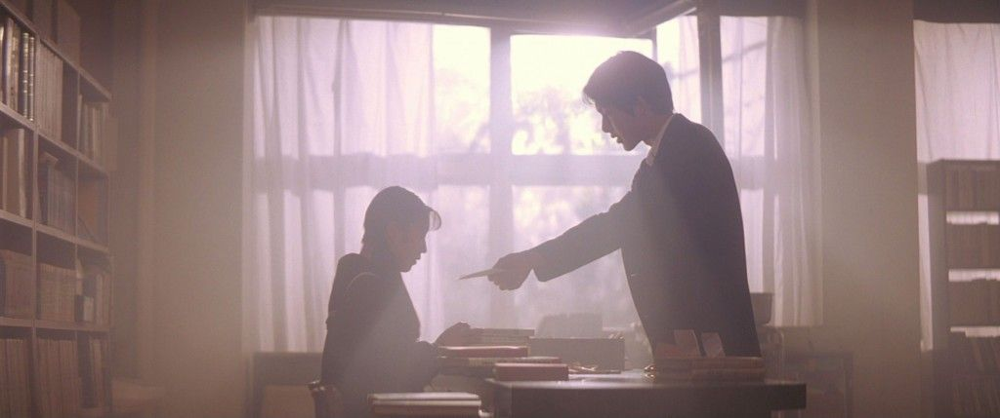
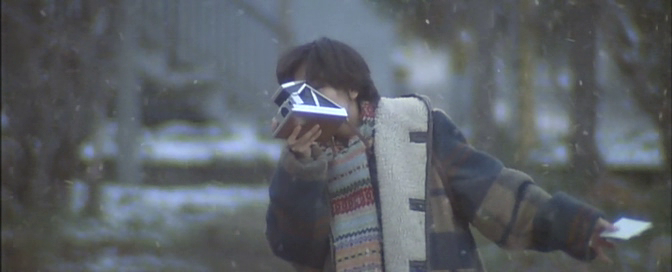
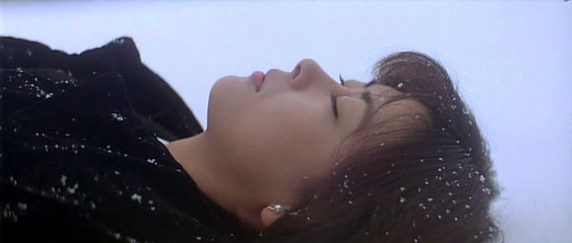
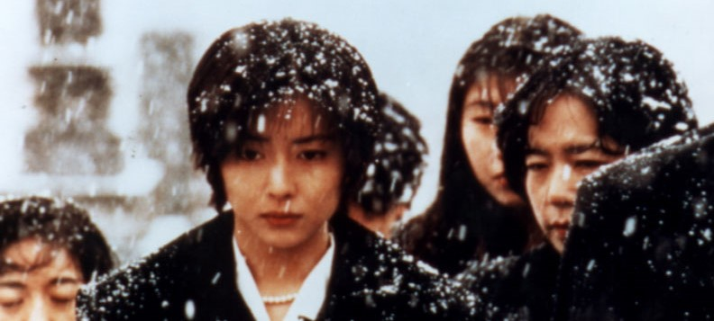
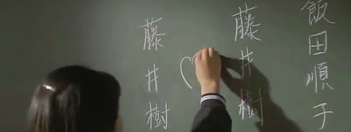

On January 17th, 2020, a film named Last Letter was released in Japan. The movie was directed by one of my favorite directors, Shinji Iwai. The story of the movie is the drama of a cross-century romance, and this new release reminds me of Shinji Iwai’s first letter. It is a cinematic creation across the whole century. About a century ago, Marcel Proust, one of the most reputable French novelist, wrote a novel, named A la recherche du temps perdu (Remembrance Of Things Past) and this author emerged a grand significance to Shinji Iwai over a half century later, which is the remarkable movie creation, Love Letter. Love Letter was directed by Shinji Iwai in 1995 and was recognized as one of the director’s best creations. Moreover, the movie Love Letter is the first letter of Shinji Iwai’s creation. Love Letter is deemed to be classic for its romance genre, due to the filming techniques of how it unveils the precious memories that were long lost and neglected in the past, as well as how it relieves obsession about the love that was never meant to be. In a subtle and gentle way, the movie slowly unfolds stories of the past and the present, like one slowly peels an apple until the skin eventually falls off and reveals the flesh.
The audience might be completely confused by the beginning of the movie. The narration of stories of the two main female characters, Hiroko Watanabe and Itsuki Fujii, are intercalated, and the faces of those two characters are the same. Thus, their lives might not be easily well separated, even though the two storylines are intercalated. Moreover, there is one more confusion in the settings of the movie. The two characters with the same name, Itsuki Fujii. The name of Hiroko’s dead is Itsuki Fujii, and this name is shared by the other female character. Those occasions interweaved to form a giant mystery that was slowly revealed with the movie’s progress. To start from the beginning, the main character, widow Hiroko Watanabe Watanabe mailed a letter to his dead husband’s hometown after she left his death anniversary. She was simply wishing to have a closure to her past and to end her grief of her dead husband, but accidentally she received a response. The message sent by Hiroko said “How are you recently? I am actually still fine.” It was a letter doomed with no response. However, she received the letter with the information: “I am fine, just with a light cold.”
The stories of what happened after this simple response I wish to remain a secret to the readers. The stories between the three characters are slowly revealing with the development of the movie. The techniques of the entire plot was about two different women with the same look and the movie from the beginning to the end was interspersed. It was a quite common technique used in novel creations. The author might choose to use odd number chapters for one character’s stories, and use even number characters for the other character’s stories. The timeline of each story is followed chapter by chapter. Even though the protagonists are changed continuously, the story still appears as a whole. In 1995, it was courageous for a director to use such montage for an entire movie. From la grande syntagmatique (the large syntagmatic category) written by French film theorist, Christian Metz, we can acknowledge that there are four different insert montage techniques: l'insert subjectif, l'insert diegetique deplace, l'insert explicatif and l'insert nondiegetique. Those could be roughly translated to subjective insertion, diegetic insertion, explanatory insertion and non-relevant insertion. The technique adopted by Shinji Iwai would be the second one. Iwai used two story sequences and each section in the sequence is continuous. The purpose of this demonstration is to show that different events happen simultaneously. The movies were full of occasions, but this intersection between two storylines cleverly eliminates the abruptness of each unreasonable occasion.
With the occurrence of sending and receiving the letters, Hiroko would like to meet this mysterious woman who has the same name as her husband. Although the scenes are picturing both women, the plot and the structures of the movie cleverly avoid the encounter of the two women at the first half of the movie. Hiroko went to the address printed on the letter of the response. It was certainly now the female Itsuki Fujii’s house, and reasonably those two characters should meet with each other. The director, however, would prefer more mystery in the plot and thus make the arrangement that Itsuki Fujii will be at the hospital at the same time when Hiroko arrives at Fujii’s front gate. Even though the two storylines changed continuously, those two characters just could not meet each other directly. Just because of this impossibility, the audience would be always curious about what would be on the next scene.
Besides the innovative structures of the movie, the scenes were also epic. To most of the audience, the two most expressive scenes would be the two shots, one at the start and one at the end. At the beginning of the movie, the protagonist Hiroko had just finished the death anniversary of her husband. Hiroko was lying in the snow with reminiscence and sadness. The entire setting of that landscape with the side portrait of the face of Hiroko was truly enchanting. After Hiroko climbed up from the snow, and slowly walked down the mountain, Noboru Shinoda, the cinematographer of the movie, used a technique called “spot moment”. Hiroko was wearing a black jacket walking in the giant white snow. She was tiny in contrast to the entire widescreen of snow like a spot in the composition. Moreover, the black color of her jacket has a more vibrant contrast to the bright white color of the snow. The scenes rendered a feeling of yearn for the naturals, which revealed Hiroko’s wish to be relieved from her husband’s death hidden deep in her heart.
Another impressive scene would be the ending of the movie, when the myth of why Hiroko's dead husband shares the same name with Itsuki Fujii is finally revealed. In the meantime, the love story embedded in the time also unveils. I truly wish not to spoil the entire movie, and luckily the filming techniques about that scenes were not absolutely worth analyzing. However, there is indeed one more filming technique that truly deserves to be discussed - the widescreen camera works, adopted by Noboru Shinoda. In 1995, when the cinema did not completely accept widescreen work in Japan, Shinoda used his extraordinary filming skills to accomplish the task. Thanks to human convention, the widescreen is more cinematic. The obstacles were tremendous at that time, cameras, projectors and other filming equipment were used to have the original ratio which is 4 to 3. However, for better visualization, Shinoda insisted to film the entire movie by widescreen ratio.
The dialogues between Hiroko and one of her admirers, Akiba Shigera, were shot by the static cameras and also motion cameras. The start of dialogue was quite peaceful, the cameras were static and then Shigera slowly walked close to Hiroko and Hiroko intentionally to keep distance between her and Shigera. Those shots were generally short and filmed by moving cameras. When both characters once stood still, the cameras switched to static. Afterwards, Shigera suddenly approached Hiroko and tried to kiss her, the shots were moving. Once he kissed her, the shots became static and a close-up to the lips. For the moving shots, the cinematographer did not use any stabilizing equipment to make the scenes more smooth. However, the director merely required the hand-hold camera to make the scenes look as natural as possible.
With many previous movies, I have analyzed different ways a director would choose to use when dealing with the matter of death. In the movie, the funeral, the whole movie uses a documentary style to record the entire process of the funeral, but generated a stronger impact on people facing the matter of death. Without any exception, Iwai also used distinctive techniques for the filming of death. Different deaths were across the entire movie. At the beginning, there was the death ceremony for Hiroko's husband. Moreover, when Fujii’s cold got worse, she was taken to the emergency room. Fujii fell asleep in the waiting hall of the hospital and she suddenly saw her father lying in the ICU. The focus was switching quickly, the shots changed from clear to vague and changed from vague to clear. The death under these shots were in sorrow rather than merely sadness.
Despite the grand success of the ratings and bookings of the movie, Love letter is also a milestone in Japanese movie history. After World War II, South Korea comprehensively prohibited the Japanese media. However, this movie was released in South Korea and was uniformly applauded by the local audience. The enormous cultural impact plays an important role in helping to break down the post-World War II barrier between the two countries.
At the present, the Last letter produced by Shinji Iwai, is still a drama and romance movie around the information of letters. Even with the same genre as the Love letter, the new movie was still applauded by the audience. The stories behind the letters are unique and the emotions written on the papers are true without any exaggerations. The sentences used in the movie were simple and concise: “ How are you recently?”, “I am fine.” However, behind the short and simple words are the hidden emotions of deep affection and how heartly one misses another. Shinji Iwai could gently express that warm feeling to the audience, with the not so unrealistic stories but the completely true feelings. Twenty years after the release of Love Letter, people are still fond of this kind of movie, because the emotions are permanent. Like Iwai wrote in his novel, “Even with the rush of the time, the sincere emotions do not have changed. Life might be short and cursory, but Love is ageless.” I believe that is what he tried to express in the Love Letter. After twenty years, what he tries to express is still unchanged.
If the Love Letter is the beginning of the entire chapter, I assume the Last Letter would be the last chapter of the era. I feel extremely fortunate to have the chance to witness the entire film career of one remarkable director. Shinji Iwai said if there is one you could miss, that would be happiness. For a movie enthusiast, there is always one movie directed by Shinji Iwai that I could look forward to, I believe that would be my simplest happiness.